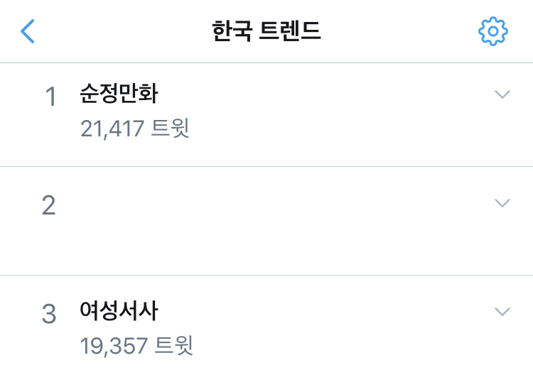

2020년 3월, “여성서사를 논할 때 순정만화는 왜 언급되지 않는가?”라는 질문으로부터 점화된 플로우. 당일 ‘순정만화’ 관련 트윗은 21,400여 트윗으로 한국 실시간 트렌드 1위, ‘여성서사’ 관련 트윗은 19,000여 트윗으로 트렌드 3위에 오르며 큰 화제가 되었다.

2020년 3월 10일, 순정만화는 여성이 만든 여성의 이야기임에도 평가절하 받아 왔는데, 왜 여성서사로도 포함시키지 않는지 의문이라는 글이 SNS에 업로드되었다. 해당 트윗이 많은 공감을 받으며 리트윗됨에 따라 “순정만화가 여성서사로 포함될 수 있는지”에 대한 토론이 점화되었다.
여성작가조차 찾기 힘들었던 때에 처음 여성으로서의 발화였던 순정만화는 시대와 환경에 따라 페미니즘적인 의의를 지닐 수 있으나, 그 서사와 내용 역시 페미니즘적일지에 대해서는 분리해서 고려해보아야 한다는 의견들이 있었다.
순정만화로 일컬어지던 작품들이 여성 작가가 만든 여성 캐릭터의 이야기라는 이유만으로 평가절하되어 왔던 것은 사실이다, 하지만 재평가를 통해 이를 회복시키는 것과 별개로 뛰어난 작품성이 곧 여성주의적이라는 보증인지에 대해서는 한 번 더 생각해보아야 한다는 의견들이 있었다.
소비층이 여성이라는 이유로 곧 작품이 여성주의적일 수 있는가, 일례로 소비층은 압도적으로 여성이지만 여성 캐릭터가 주연이 되지는 않는 BL작품은 그 서사를 여성주의적 이야기로 해석하기 힘들다는 의견들이 있었다.
여성 캐릭터가 주인공이며 주체적이라는 이유로 작품의 서사를 여성주의적이라고 평가하긴 힘들다, 전통적인 여성성과 남성과의 로맨스를 제외한 다양한 서사를 아우르는 ‘순정만화’는 찾기 힘들다는 의견들이 있었다.
그 외에도 ‘순정만화가 여성서사’라는 주장은 여성 캐릭터가 주가 되는 순정만화는 지금까지 충분히 생산되었음에도 왜 여성주의자들이 여성서사에 목말라하는지를 오히려 짚지 못한 주장이라는 의견들이 있었다. 더하여 이러한 의견을 주장하는 이들은 여성서사로 순정만화를 소비하자며 일본의 순정만화 작품을 대안으로 추천한 해당 트윗을 비판하기도 했다.
여성주의자들이 순정만화 혹은 헤테로로맨스 장르의 작품 모두를 평가절하하거나 보지도 않고 비판하는 것은 아니며, 지금까지 그 작품들을 소비해온 이들이 다양한 서사를 찾는 것이라는 의견이 있었다.
아름다움(만)이 여자의 뛰어난 장점이 되고 남성과의 사랑이 작품의 결정적인 스토리가 되는 서사 말고도, 여성의 다양한 이야기를 원하여 이러한 작품들을 응원하고 소비하기 시작한 것이 여성서사 소비 플로우라는 의견들이 있었다.
현재 여성서사 작품으로 대표되는 극락왕생(극락왕생 문서 바로가기 클릭!)이나 합법해적 파르페(합해파 문서 바로가기 클릭!)와 같이, 골격이 굵거나 뛰어난 신체적인 능력을 장점으로 하는 여성들을 주인공으로 하는 작품은 과거에는 없었다, 시대적 상황에 따라 여성서사에 대한 다른 요구가 생기는 것을 고려해야 한다는 의견들이 있었다.
여성서사 혹은 여성주연물을 소비하는 이들을 모두 '본래 취향이었던 남성주연물을 억지로 힘겹게 포기한 이들'로 간주하며, 이렇게 비장하게 혹은 숭고하게 여성서사를 소비해야 하냐는 질문이 있었다. 이러한 질문을 던진 이들은 여성서사를 자연스럽게 좋아하는 것이 아니라 의식적으로 혹은 기계적으로 소비하는 것은 잘못되었다는 뉘앙스의 의견을 남기기도 했다.
또한 여성서사를 소비하는 이들 일부는 PC함(정치적 올바름)을 위한 수단으로 혹은 트로피와 같이 여성서사를 생각하고 있으며, 이러한 목적의 여성서사 소비는 옳지 못하다는 의견이 있었다.
이에 대해, 여성서사에 대한 소비는 자신이 즐기는 취향인 동시에 정치적인 선택으로도 기능하며, 여성 스스로 다양한 모습을 꿈 꿀 수 있게 만드는 여성 주연물의 풀을 넓히고 여성서사를 만드는 여성 작가들을 연대·지원하기 위한 의도적인 소비라는 의견이 있었다.